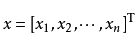

在机器学习中遇到了难题，就是对正则化的理解，通过查阅资料，记录下什么是正则化。
正则化
模型选择的典型方法是正则化（regularization）。正则化是结构风险最小化策略的实现，是在经验风险上加一个正则化项（regularizer）或罚项（penalty term）。正则化项一般是模型复杂度的单调递增函数，模型越复杂，正则化值越大。比如，正则化项可以是模型参数向量的==范数==。
在这里我又遇到了一个问题，什么是范数，哎，高数没学好，啥也不知道了。
范数(norm)是数学中的一种基本概念。在泛函分析中，它定义在赋范线性空间中，并满足一定的条件，即①非负性；②齐次性；③三角不等式。它常常被用来度量某个向量空间（或矩阵）中的每个向量的长度或大小。
看完定义又是头大，完全不理解啊！
定义和性质什么的都不重要了，这里我只需要知道范数所代表的函数意义：1
2
3
41-范数：║x║1=│x1│+│x2│+…+│xn│
2-范数：║x║2=（│x1│2+│x2│2+…+│xn│2）1/2
∞-范数：║x║∞=max（│x1│，│x2│，…，│xn│）
其中2-范数就是通常意义下的距离。
矩阵范数：1
2
3
4
5
61-范数：
║A║1 = max{ ∑|ai1|，∑|ai2|，……，∑|ain| } （列和范数，A每一列元素绝对值之和的最大值）（其中∑|ai1|第一列元素绝对值的和∑|ai1|=|a11|+|a21|+...+|an1|，其余类似）；
2-范数：
║A║2 = A的最大奇异值 = (max{ λi(AH*A) }) 1/2 （谱范数，即A^H*A特征值λi中最大者λ1的平方根，其中AH为A的转置共轭矩阵）；
∞-范数：
║A║∞ = max{ ∑|a1j|，∑|a2j|,...，∑|amj| } （行和范数，A每一行元素绝对值之和的最大值）（其中∑|a1j| 为第一行元素绝对值的和，其余类似）；
看了这几个例子大概理解了，若
，那么
继续正则化的话题，正则化主要解决的问题：
1.正则化就是对最小化经验误差函数上加约束，这样的约束可以解释为先验知识(正则化参数等价于对参数引入先验分布)。约束有引导作用，在优化误差函数的时候倾向于选择满足约束的梯度减少的方向，使最终的解倾向于符合先验知识(如一般的l-norm先验，表示原问题更可能是比较简单的，这样的优化倾向于产生参数值量级小的解，一般对应于稀疏参数的平滑解)。
2.同时，正则化解决了逆问题的不适定性，产生的解是存在，唯一同时也依赖于数据的，噪声对不适定的影响就弱，解就不会过拟合，而且如果先验(正则化)合适，则解就倾向于是符合真解(更不会过拟合了)，即使训练集中彼此间不相关的样本数很少。
正则化一般具有如下形式：
其中第一项是经验风险，第二项是正则化项，λ>=0为调整两者关系的系数。正则化项可以取不同的形式，例如，回归问题，损失函数是平方损失，正则化项可以使参数向量的2范类。
范类的记录大概就是这么多了。
泰勒公式
顺便说下泰勒公式，是在学习吴恩达的机器学习正则化时才想到的，我们的预测模型是一个多项式的和，当多项式过少会欠拟合，过多会过拟合，当多项式足够多的时候就会区分出所有的种类，这不就是泰勒公式展开式吗？
数学中，泰勒公式是一个用函数在某点的信息描述其附近取值的公式。如果函数足够平滑的话，在已知函数在某一点的各阶导数值的情况之下，泰勒公式可以用这些导数值做系数构建一个多项式来近似函数在这一点的邻域中的值。
泰勒公式是将一个在x=x0处具有n阶导数的函数f(x)利用关于(x-x0)的n次多项式来逼近函数的方法。
若函数f(x)在包含x0的某个闭区间[a,b]上具有n阶导数，且在开区间(a,b)上具有(n+1)阶导数，则对闭区间[a,b]上任意一点x，成立下式：
其中,fn^(x)表示fn(x)的n阶导数，等号后的多项式称为函数f(x)在x0处的泰勒展开式，剩余的Rn(x)是泰勒公式的余项，是(x-x0)n的高阶无穷小。
参考：
李航 统计学习方法